VR-401: Gen-AI and VR-based full-body dance sensing and choreography optimisation
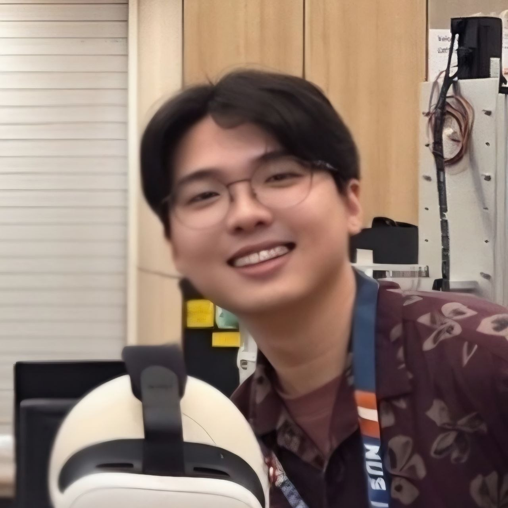
1. Introduction and Project Context
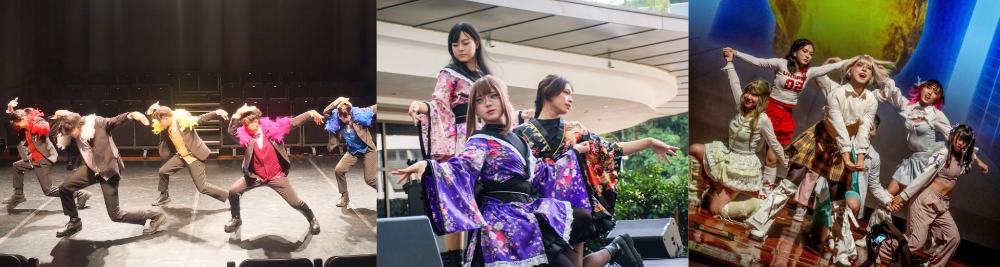
As a dancer myself with a background in modern K-pop and J-pop idol choreography, I know how much preparation goes into a single performance. A few minutes on stage can involve months of learning, rehearsing, and refining movements. Outside group rehearsals, much of this work happens independently. We learn from reference videos, check ourselves in mirrors, and watch recordings to understand what needs improving.
However, this process is not always straightforward. I can sometimes see or feel that a movement looks different from the reference without knowing exactly what to change. At other times, I only notice a mistake when a more experienced dancer points it out during the group rehearsal. My project investigates how technology could support this process during independent practice.
The project focuses on the idol-dance community I am involved in, including the dancers I engage with, the choreography I investigate, and the practice situations I test. My own experience provides a starting point, while the survey and technical trials help me check which difficulties others share and which solutions are worth developing.
This semester, I investigated dancer needs, reviewed relevant studies, and explored existing tools for viewing and capturing movement. These activities led to a proposed VR practice system. Next semester, I plan to extend it towards identifying movement differences and providing corrections that dancers can understand and incorporate into their existing practice workflow.
2. Survey Findings and Identified Practice Needs
2.1 Survey Overview
I surveyed 35 dancers in my community about their ideal practice conditions, desired learning support, and difficulties during independent practice. The questionnaire used three open-ended questions, allowing dancers to explain their experiences in their own words. The responses were collected in August and September 2026.
I grouped the responses into related themes. A response could contribute to several themes, but each dancer was counted once within a theme. The percentages below use all 35 respondents as the denominator. They show how often something was mentioned, rather than a ranking of importance. The facilities and challenges questions each received 34 answers and all respondents answered the learning support question.
2.2 Ideal Practice Conditions and Access to Mirrors
| Preferred Practice Condition | Respondents | Percentage |
|---|---|---|
| Mirrors | 33 | 94.3% |
| Cooling or Ventilation | 32 | 91.4% |
| Sufficient Space or Suitable Layout | 17 | 48.6% |
| Audio and Acoustic Conditions | 14 | 40.0% |
| Suitable Flooring | 11 | 31.4% |
| Lighting | 9 | 25.7% |
| Visual Privacy | 4 | 11.4% |
Mirrors were mentioned by 33 of the 35 dancers, alongside comfort requirements such as cooling and having enough space. The descriptions included full-length visibility, wide and undistorted reflections, and being able to check movement from different directions. These details suggest that dancers value a clear view of their whole execution, rather than simply having any reflective surface nearby.
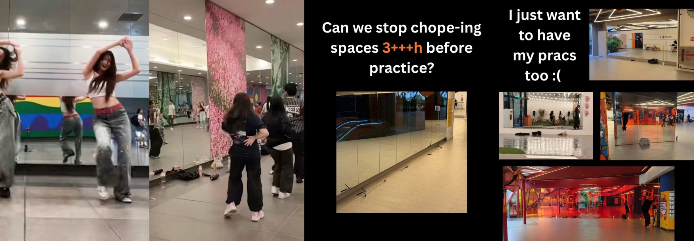
The question asked about ideal facilities, so these results do not mean that 33 dancers currently lack mirror access. Nevertheless, access to suitable spaces with reflective surfaces is a practical challenge outside the survey. CNA (2026) reported that popular mirrored corridors along the Bayfront MRT linkway were frosted after complaints about pedestrian obstruction [2]. Dancers described it as losing an already limited valuable free practice location. Excessive “chope-ing” of mirrored spaces due to limited practice locations also contribute to this challenge [3]. These examples illustrate the difficulty in securing comfortable spaces where dancers can sufficiently view themselves, although it does not establish how widespread the problem is across Singapore.
My project cannot resolve every facility requirement. Dancers would still need adequate space, suitable flooring, and ventilation. The opportunity is to support observation in otherwise suitable places without depending on already installed mirrors.
2.3 Desired Learning Support
| Desired Support | Respondents | Percentage |
|---|---|---|
| Self-observation | 20 | 57.1% |
| Corrective or Interpretive Guidance | 14 | 40.0% |
| Step-by-step Instruction | 13 | 37.1% |
| Playback Speed Adjustment | 10 | 28.6% |
| Explicit Reference Comparison | 7 | 20.0% |
| Timing or Count Support | 4 | 11.4% |
Self-observation was the most frequently mentioned support theme, in line with the first survey question. However, dancers also requested explanations, step-by-step breakdowns, and playback controls. This suggests that providing a view of the dancer is only one part of supporting practice.
The responses described different uses for mirrors and recordings. Mirrors helped dancers check and adjust their movements immediately, while recordings made some details easier to notice afterwards. A useful system may therefore need both live observation and review. Playback controls also matter because dancers need to isolate a difficult section, slow it down, and repeat it without interrupting their practice unnecessarily.
Requests for guidance ranged from checking alignment to understanding accents, weight placement, and how to execute a move. These are not equally straightforward to assess. Seeing where a limb is positioned may support an alignment comparison, but does not directly establish muscle activation or how weight is distributed between the feet. I will therefore need to select movements based on what the system can measure reliably.
2.4 Difficulties and Three Connected Needs
Some difficulties during independent practices include a mismatch between how dancers thought they were moving and how they actually looked, uncertainty about small adjustments, and a lack of explanation for differences from the reference. Some depended on another person to identify improvements. Other challenges included learning fast sequences, body control, self-consciousness, and motivation.
Together, the findings suggest three connected needs: seeing actual execution, identifying what differs from the intended choreography, and understanding how to correct it. A mirror can help with the first, but it does not automatically explain the other two.
The survey remains exploratory and the sample comes from my own dance community. It did not establish willingness to wear equipment or acceptable setup time for potential technologies that could support independent practice. These questions require follow-up investigation, especially when assessing whether a proposed system fits actual practice workflows.
3. Existing Systems and Studies
I reviewed technological approaches that address parts of these three needs. The aim was to understand what already exists and what I could learn from it before selecting my own approach.
3.1 Seeing the Execution
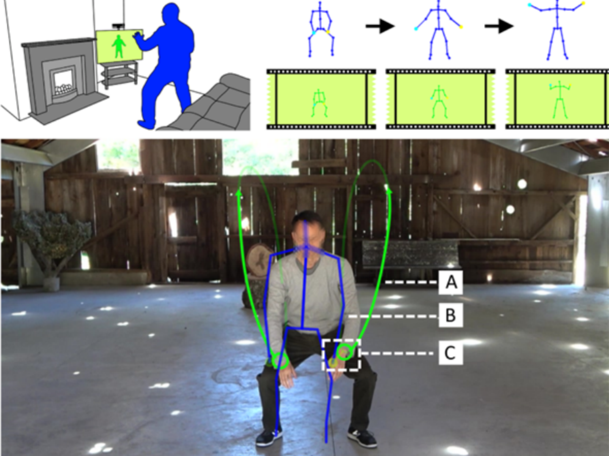
Treffer (2024) investigated different technological visual feedback methods for dance teaching [6]. One notable example was a mixed-reality mirror using an Azure Kinect camera and projector. It displayed the learner's image alongside a virtual instructor and compared three visual-feedback methods, Spheres, Rubber Bands, and Arrows. Participants performed best with Arrows but preferred Spheres. This suggests that an appealing interface should not automatically be treated as the most effective learning tool.
For my project, the study demonstrates how self-observation and a reference can share one interface. My remaining question is how to make this support portable and easy to deploy without permanent installations. The camera and projector arrangement is a precedent to learn from, rather than evidence that the study itself failed to address portability.
3.2 Identifying Discrepancies
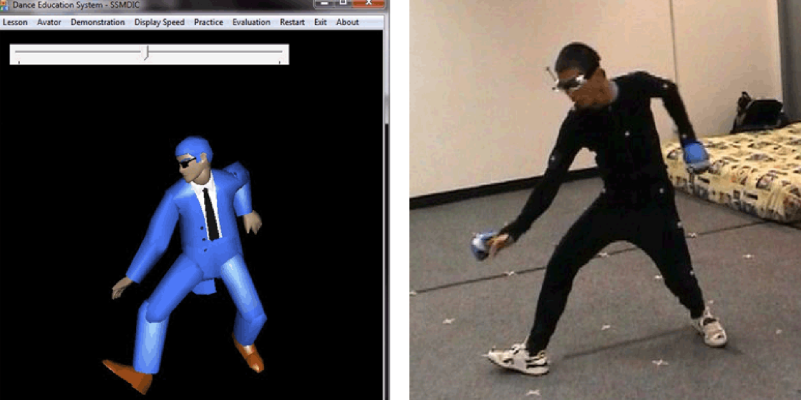
Chan et al. (2011) developed a system that captured learners' movements and analysed them against a virtual teacher projected onto a screen [1]. The authors reported improvements in dance skills and positive responses concerning interest and motivation. This demonstrates how movement data can support comparison beyond the dancer's own visual judgement.
For idol choreography, I still need to determine which differences matter. Dancers may vary their expression or movement style without performing incorrectly. Body proportions and errors in captured movement can also create apparent differences. The project therefore needs assessment criteria suited to selected movements, rather than treating every discrepancies from a reference as a mistake.
3.3 Delivering Corrections
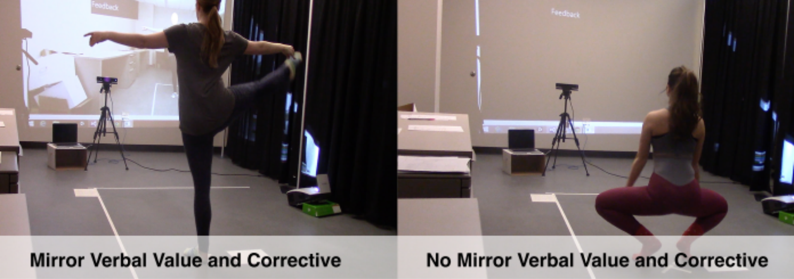
Trajkova and Cafaro (2018) examined visual and verbal feedback with 16 novice and 16 expert ballet dancers [5]. They also compared value and corrective feedback, with and without mirror guidance. Their findings indicate that feedback design should account for the learner's experience.
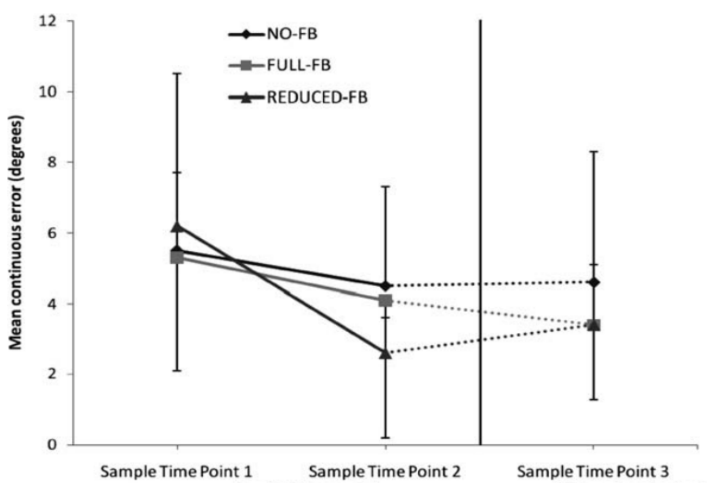
Eaves et al. (2011) compared full, reduced, and absent real-time feedback with 30 novices [4]. Reduced feedback concerning four end-effectors produced greater error reductions across five measures than the other conditions. This suggests a good opportunity to investigate focused corrections instead of showing every difference simultaneously.
These studies inform how feedback could be presented, but do not establish the best arrangement for idol choreography. My next step is to investigate how identified differences can become understandable adjustments for my target users.
4. Refined Problem Statement
The user investigation and existing studies lead to the following problem statement:
Beginner and intermediate dancers practising modern K-pop and J-pop idol choreography independently need accessible ways to observe their execution, identify relevant movement discrepancies, and understand corrections they can practise.
Existing research demonstrates ways of supporting some of these stages. My project will investigate how to bring them together in a practical workflow for independent idol dance practice. The main questions are how to provide portable observation, distinguish meaningful mistakes from acceptable variation, and communicate a useful correction. These questions guide the objectives and the investigation of possible approaches.
5. Design Objectives
5.1 Capture and Present Movement for Self-Observation
The first objective is to let dancers clearly observe their movements live through an avatar without installed mirrors. I aim to achieve a setup time of less than ten minutes, measured from unpacking to readiness for practice, including equipment placement, additional wearables if any, software checks, and calibration.
For live self-observation, I will target a delay of 75 milliseconds or less between the dancer’s physical movement and the corresponding avatar movement displayed in the headset. This initial target is informed by Waltemate et al. (2016) and will be evaluated during the selected dance tasks [7].
These are provisional design targets that will be reviewed through pilot testing. They provide a basis for assessing progress in preparation time, responsiveness, and movement accuracy.
5.2 Identify Relevant Movement Discrepancies
The second objective is to identify which movement parameters to measure and establish how much deviation from the reference should be considered a mistake rather than acceptable stylistic variation. I will develop these criteria with dance teachers and item ICs using selected choreography and/or dance moves.
My initial targets are to detect at least 80% of expert-labelled mistakes while incorrectly flagging no more than 20% of acceptable examples. I will evaluate these targets using examples separate from those used to develop the assessment criteria. This will check whether the system identifies relevant mistakes without unnecessarily correcting acceptable movements.
5.3 Deliver Understandable Corrections
The third objective is to communicate adjustments that dancers can understand and apply. I will investigate the amount, format, and timing of feedback, with initial targets of at least 80% of feedback cues being correctly understood and an average reduction of at least 20% in selected movement error after practice.
I will check understanding by asking dancers to explain or demonstrate the requested adjustment. A consistent scoring method will measure movement error before and after practice, with equal duration video-based practice used for comparison. These provisional targets will be reviewed through pilot testing.
Initial evaluation will focus on a short J-pop choreography section and selected observable movement features. This keeps the task manageable while allowing me to investigate the complete process from observation to correction.
6. Technologies Investigated for Design Objective 1
This semester, I focused on the first objective, how movement can be captured and presented for observation. I investigated video-based practice, camera-based reconstruction, and full body tracking using wearable trackers in VR. Wearable trackers with a conventional screen method was also considered, but not tested separately.
The trials were exploratory. They helped identify useful features and practical limitations, rather than providing a controlled ranking of technologies.
6.1 Sound Game Training
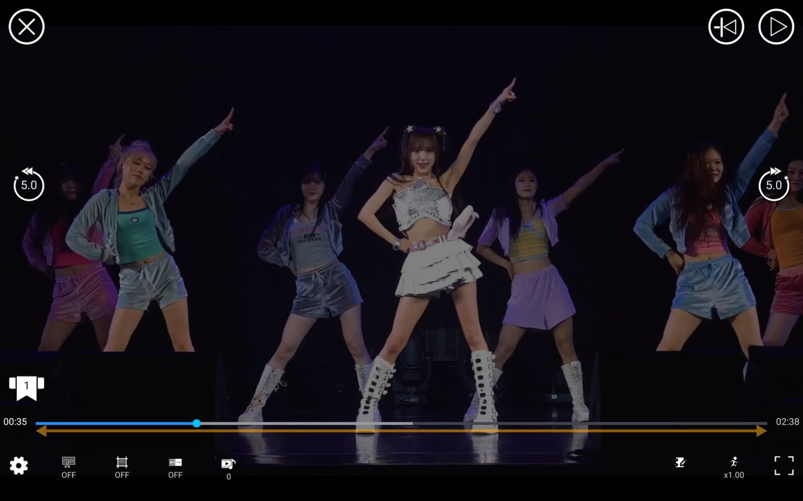
Sound Game Training is an established tool in my dance community. I use it in my own practice and when teaching. Its playback controls make it convenient to isolate sections, adjust speed, and repeatedly practise difficult segments. It will serve as the benchmark for the media controls in my prototype.
However, it controls the reference video rather than capturing any movement. Self-observation still requires a recording or reflection, and identifying differences depends on the dancer. This makes it useful for understanding the existing practice workflow, while leaving room to add observation and comparison functions.
6.2 Sway Formations
Sway Formations converts a dance recording into a three-dimensional avatar that can be viewed from different angles. This offers a way to inspect movement beyond the original camera view. It also suggests the possibility of presenting both learner and reference choreography using a common visual format.
My testing revealed some limitations though. It struggled with travelling movements and changes of position, and had difficulties with obstructions. The avatar also showed noticeable foot sliding. I suspect floor referencing may contribute, but I have not established the cause.
These observations matter because a reconstructed difference could come from the software rather than the dancer. Similar avatar appearances may make comparison easier to read, but do not automatically make the movement data more accurate. Next semester, I will investigate whether the reconstructed features and available data are suitable for reference comparison.
6.3 Full-Body Tracking in VR
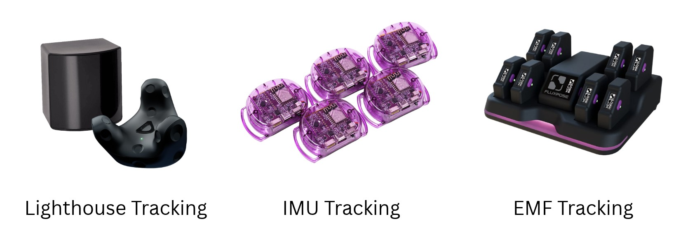
Wearable tracking in VR provided live self-observation through an avatar. Of the lighthouse, inertial, and electromagnetic options considered, I tested lighthouse because I already had access to the equipment. The other options remain possible investigations depending on availability.
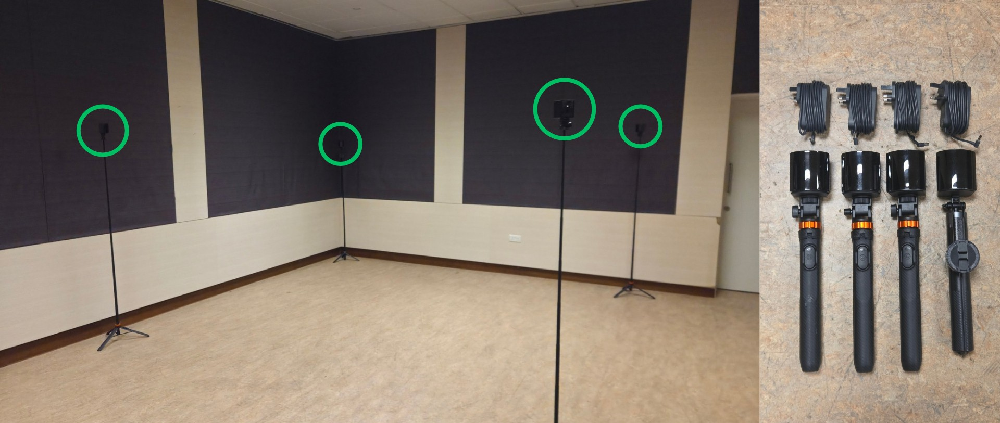
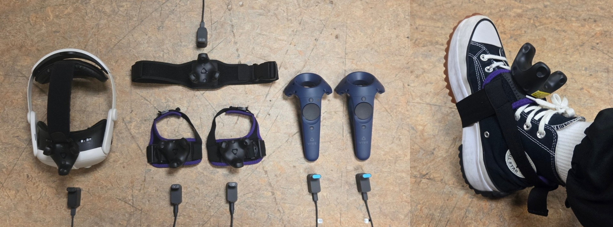
Lighthouse Trial: I transported a PCVR setup to a practice venue, using base stations around the movement area, trackers worn on the body, a headset, and a gaming laptop. The equipment operated from one available power outlet through extension equipment. I used limited body-tracker coverage to explore how much movement information could be obtained while keeping the setup relatively simple.
Preparation involved positioning base stations, activating trackers, checking SteamVR, wearing the trackers, and completing the necessary calibration. It took approximately 15 minutes despite my prior VR experience. This is an estimate from the trial, rather than an average from repeated deployments. The devices connected successfully during the session.
The setup demonstrated excellent live avatar observation without a physical mirror. VR also allows for customisable environments and avatar appearances. Remote instruction in a shared three-dimensional space is another possible application, although I did not test it.
The trackers were not particularly uncomfortable, but I could feel them and worries about damaging them made me hold back during powerful movements. I also observed discrepancies in some elbow and knee representation during movements involving wrist or ankle rotation. Limited sensor coverage may contribute, but calibration and the software's estimation of untracked joints also need investigation.
I recorded examples for review, but did not establish numerical tracking accuracy. Further tests will repeat selected movements with different configurations and examine whether additional sensors improve accuracy enough to justify the extra weight and wearing burden.
The trial also helped separate device tracking from full-body representation. Even if the tracked hand follows my movement, the software still needs to estimate an elbow without its own sensor. A visible mismatch could therefore arise from how the body is reconstructed, rather than the tracker losing its position. This distinction will guide the next tests and help avoid adding equipment without understanding the source of the problem.
7. Selected Concept and Next-Semester Development
7.1 Selected Concept
I selected VR as the direction for my prototype because it supports live avatar observation without installed mirrors and offers a way to combine reference viewing, playback controls, and corrections in one environment. This decision is based on the functions I want to develop and the trial experience. It does not establish that VR is universally more accurate or easier to prepare than the alternatives.
I plan to provide a virtual mirror and playback controls benchmarked against Sound Game Training. I will also investigate adding a reference dancer reconstructed from video similar to the functions of Sway Formations, allowing users to inspect the choreography from different angles. If reconstruction is unsuitable, the system can initially retain a video reference while other functions are developed.
The intended session would begin with setup and calibration, followed by choosing a choreography section and playback speed. Dancers could watch the reference, perform the section, and review a selected difference before repeating it. I will investigate when the corrections should be deployed, during execution or between attempts, since dancers may struggle to read and apply several cues while moving.
Customisable outfits and environments could extend the experience, including recreating a performance stage. However, my immediate priorities are preparation, accurate movement representation, and the three design objectives. The contribution to take note should include the practice workflow, movement-assessment criteria, and feedback built around existing tracking hardware.
7.2 Defining Parameters and Building Examples
Next semester, I will work with dance teachers and item ICs, meaning the leaders responsible for teaching individual performance items. Together, we will select movement features and discuss acceptable variation. Possible measurements include joint angles, hand positions, and timing relative to counts, depending on the choreography.
Their assessments will help build labelled examples of acceptable execution and mistakes, paired with explanations and corrections. Where teachers disagree, I will examine whether the criterion is unclear or reflects a legitimate stylistic choice. These examples will help establish thresholds that are meaningful for the selected movements.
7.3 Developing Identification and Corrections
I will first develop a comparison method using the selected parameters. Reference and learner movement will need to be aligned in time and account for relevant body-size differences. This method will provide a baseline for investigating AI-assisted identification and correction.
The expert-labelled examples could support model development, but the model and amount of data required have not yet been decided. I will evaluate detection using examples separate from those used to develop it, checking both missed mistakes and false corrections. Feedback should explain the measured difference and suggest an adjustment consistent with the teachers' assessments.
7.4 Scoring and Testing with Dancers
Before the main user trials, I will establish a consistent scoring method for the selected features. For example, a defined pose could use joint-angle error, while a transition might require timing or movement-path measurements. Scores will be checked against recordings or expert assessments, rather than relying only on the system's own judgement.
I plan to compare practice with the prototype against video-based practice over similar durations. Measurements will include scores before and after practice, whether dancers understand the cues, and whether they can make the intended adjustment. A later attempt without feedback could help assess retention. Participant numbers and the detailed procedure will be decided after pilot testing.
I will also record setup time, interruptions, and whether the equipment affects confidence or movement. These practical measures are important because a system could improve a selected score while still being too inconvenient for regular practice. The evaluation should establish both what improves and what dancers must do to obtain that benefit.
8. Next-Semester Schedule and Gantt Chart
The schedule follows the three objectives, with tracking and setup improvements running alongside development of assessment criteria. The first milestone is a usable VR practice environment and subsequent milestones are agreed movement criteria, an integrated feedback system, and completed dancer evaluation.
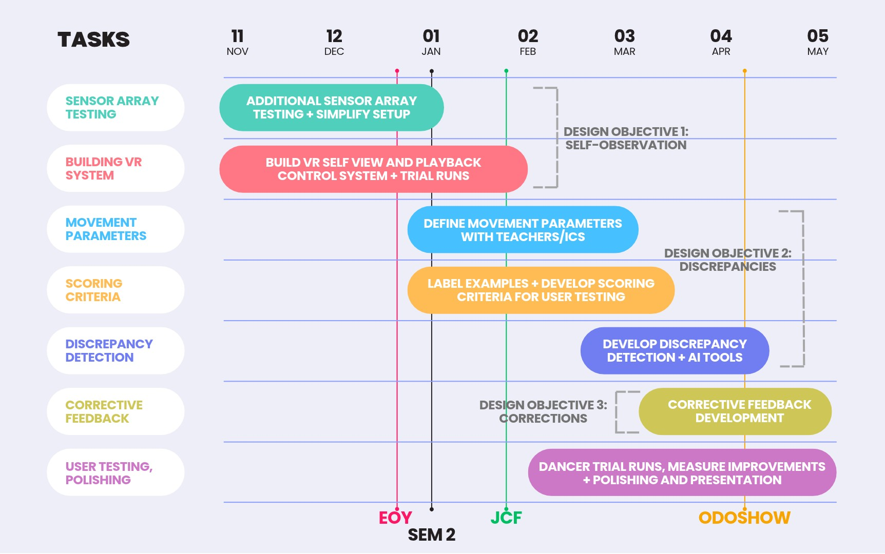
Upcoming performances involving me and my dance community provide opportunities to gather feedback as each design objective is developed. These sessions will support early improvements, followed by a more structured comparison of practice outcomes. Optional hardware tests and customisation will depend on available time, while the core system will remain achievable with available equipment.
References
[1] J. C. P. Chan, H. Leung, J. K. T. Tang, and T. Komura, “A virtual reality dance training system using motion capture technology,” IEEE Transactions on Learning Technologies, vol. 4, no. 2, pp. 187–195, 2011, doi: 10.1109/TLT.2010.27.
[2] CNA, “Frosted mirrors along Bayfront MRT linkway draw complaints from dancers on loss of rare free space,” Jan. 16, 2026. Accessed: Oct. 21, 2026. [Online]. Available: https://www.channelnewsasia.com/singapore/frosted-mirrors-bayfront-mrt-linkway-dancers-dance-groups-obstruction-5863621
[3] Sanxithe, “Dancers at *SCAPE We need to talk,” Instagram, Sep. 24 2026. Accessed: Oct. 21, 2026. [Online]. Available: https://www.instagram.com/p/DdqMjUzk6O1/
[4] D. Eaves, G. Breslin, and I. R. Spears, “The short-term effects of real-time virtual reality feedback on motor learning in dance,” Presence: Teleoperators and Virtual Environments, vol. 20, no. 1, pp. 62–77, 2011, doi: 10.1162/pres_a_00035.
[5] M. Trajkova and F. Cafaro, “Takes Tutu to Ballet: Designing visual and verbal feedback for augmented mirrors,” Proceedings of the ACM on Interactive, Mobile, Wearable and Ubiquitous Technologies, vol. 2, no. 1, Art. no. 38, 2018, doi: 10.1145/3191770.
[6] A. Treffer, “Teaching dance with mixed reality mirrors: Comparing virtual instructors to other forms of visual feedback,” master’s thesis, University of Canterbury, Christchurch, New Zealand, 2024, doi: 10.26021/15322.
[7] “Latency,” VR & AR Wiki. Accessed: Oct. 21, 2026. [Online]. Available: https://vrarwiki.com/wiki/Latency
Appendix A: Survey Questionnaire and Anonymised Responses
1. Ideal Practice Facilities & Setup
What physical setups, facilities, or practice conditions (e.g. mirrors, aircon, good lighting, floor space, sound setup, etc.) make you feel most comfortable and productive when practicing? Describe your dream practice space.
2. Learning & Training Support
When you are practicing on your own outside of club/group rehearsals or practices, what kind of guidance or (visual) feedback would help you improve the fastest? (e.g. being able to see yourself in recordings, access to broken down step-by-step tutorials, easy speed adjustments, feedback on body alignment, etc.)
3. Struggles, Worries, or Frustrations
What is your biggest challenge, worry, or block when learning, practicing, or creating dance on your own without an instructor present? (Example for beginners: self-consciousness, feeling lost with body control or timing, etc. Example for experienced dancers: hitting creative blocks, feedback on subtle technical errors, etc.)